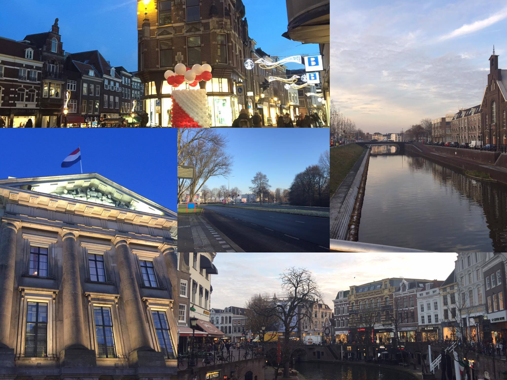

Conference trip to Netherlands
After 8 months I went to Japan, I have submitted my first research result to the International Conference - GALA (Games and Learning Alliance). Fortunately, my research was high evaluated so that I had a chance to present my research to many international researchers in Netherland. This achievement is the worth result of a lot of effort of mine in the research under supervision of Professor Iida. GALA conference is the famous conference for the Serious Game and Gamifcation topics. The commitees of this conference come from many countries in Europe such as France, Italia, and Germany. My research aimed at analyzing and evaluating the use of game elements in education. That is a reason why I have an invitation to go to GALA.
After I submitted the research paper publication result and the invitation to my university, I got a grant for my conference trip (around 40,000JPY). In this trip, I went with 2 guys in my laboratory and Professor Iida helps us in a flight ticket and hotel reservation. This was really the most longest flight in whole of my life. We first flight from Komatsu Airport (the nearest airport from my university) to the Tokyo, Haneda airport and then from Haneda to Frankurt (Germary). Finally, we arrived Amasterdam at 8:00 pm.
In Amsterdam, we are welcomed by my colleague’s cousin (a Chinese guy). My first impression about him is “Wow, a Amsterdam playboy”. He takes us to a Chinese restaurant to have dinner and then we go around Amsterdam, of couse a Red district is also included. This is very first time for me to go around a Red disctrict, it is really interesting experience. Next, we went to a “weed” store and I have been noticed that “Coffee shop” and “Cafe shop” is totally different in Netherland. After all, we started to go to Utrect city and arrived our hotel at 12 pm and finish a long day.

I have had a nice trip in the Netherlands where I would like to come back again. I very love an atmosphere and an ancient architecture in the Europe. Those reflect the very long-term development of European history. Walking around a down town of Utrecht city makes me feel that I was falling in the Harry Potter’s world. The cold air, yellow light, vintage house, etc. those make me feel that I am living in the 18th century. Moreover, Netherland is a board games country. I found various types of board games in many store. If you are a board-game fan, I think Netherlands is really a good place to live in the rest of your life.
Finally, I completed successfully my presentaion and came back to Japan. It is really a nice trip I never had before. My research is commented by many PhD and professor in the conference. Those comments are good contributions which helps my research moves forward. If you are interesting to my research, you can find a introduction below.
Analyzing Gamification of “Duolingo” with focus on Its Course Structure
Abstract:
Gamification is the application of game-based elements and game design techniques in non-game contexts. Many learning platforms have applied gamification to increase motivation and engagement. Duolingo is a popular language learning platform which has applied gamification.
In this paper, game refinement measure is employed to evaluate the gamification of Duolingo. The results show that the range of game refinement value of Duolingo is reasonable in such as serious environment. By assuming a milestone in a language course as a sub game, it is supposed that the challenges in each milestone could adapt the advancement of learners’ skill.
Keywords:
Duolingo, gamification, language learning platform, game refinement theory, attractiveness.